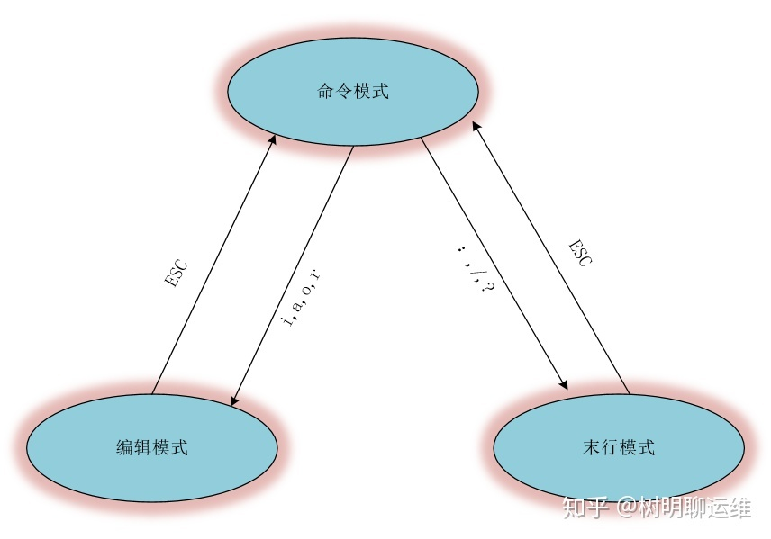
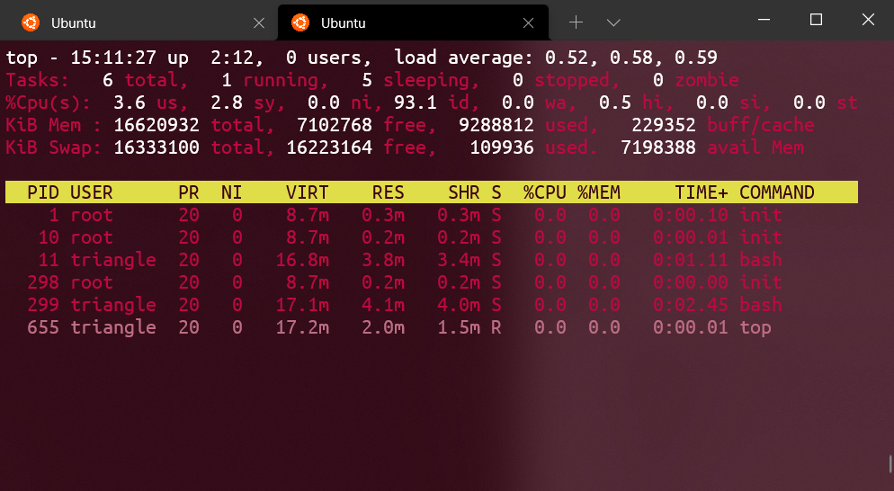

指令
1. 文件目录
1.1. find
[!tip]
-size: 根据大小查找
-size +6k: 大于6k-size -10k: 小于10k
-name: 根据名字查找-type
-empty：查询空文件
忽略大小写
triangle@LEARN_FUCK:~$
find ./ -iname "ReadMe.md"
查询到文件然后执行指令
{}：代表find所查询到的内容\;：附加指令的结束标记
triangle@LEARN_FUCK:~$
find ./ -type f -exec python AutoNum.py {} \;
时间查询
/var 目录下找出 90 天之内未被访问过的文件
triangle@LEARN_FUCK:~$
find /var -type f -atime -90
/home 目录下找出 120 天之前被修改过的文件
triangle@LEARN_FUCK:~$
find /home -type f -mtime +120
1.2. whereis
[!tip]
用来定位指令的「二进制程序」、「源代码文件」和「man」手册页等相关文件的「路径」。
triangle@LEARN_FUCK:~$
whereis cp
cp: /bin/cp /usr/share/man/man1/cp.1.gz /usr/share/man/man1/cp.1posix.gz
1.3. locate
[!tip]
- 介绍：
linux自带的类似everything的「文件搜索」软件。
- 原理: 先建立一个包括系统内所有档案名称及路径的「数据库」，之后当寻找时就只需查询这个数据库，而不必实际深入档案系统之中了。
- 注意：最近的文件可能查找不到。
数据库由updatedb程序来更新，updatedb是由cron daemon周期性建立的，locate命令在搜寻数据库时比由整个由硬盘资料来搜寻资料来得快，但较差劲的是locate所找到的档案若是最近才建立或 刚更名的，可能会找不到，在内定值中，updatedb每天会跑一次，可以由修改crontab来更新设定值。(etc/crontab)
updatedb：可以用来强制更新数据库
triangle@LEARN_FUCK:~$
locate /bin/cp
/bin/cp
/bin/cpio
/usr/bin/cpan
/usr/bin/cpan5.26-x86_64-linux-gnu
/usr/lib/klibc/bin/cpio
1.4. ls
显示文件名
triangle@LEARN_FUCK:~$
ls
chapter linux.md
显示文件名与类型
triangle@LEARN_FUCK:~$
ls -F
chapter/ linux.md*
显示完整路径
triangle@LEARN_FUCK:~$
ls -l
total 0
drwxrwxrwx 1 triangle triangle 4096 Sep 7 21:34 chapter
-rwxrwxrwx 1 triangle triangle 0 Sep 7 21:32 linux.md
1.5. mkdir
triangle@LEARN_FUCK:~$
mkdir -p 路径
1.6. du
[!tip]
du (disk usage): 查看文件夹和文件的磁盘占用
ha : 默认只显示文件夹，a会显示到具体文件
- 文件夹的大小 = 目录文件大小 + 文件夹内文件的大小; 数据块的大小
s （summarize） : 查看路径对于数据块的总大小--max-depth= : 文件夹路径的层级
triangle@LEARN_FUCK:~$
du -h
8.0K ./chapter
8.0K .
triangle@LEARN_FUCK:~$
du -ha
4.0K ./chapter/command.md
4.0K ./chapter/foundation.md
8.0K ./chapter
0 ./linux.md
8.0K
1.7. rm
[!tip]
--i：删除前询问
--f：强制删除
--r：递归
triangle@LEARN_FUCK:~$
rm -i linux.md
rm: remove regular file 'linux.md'? n
1.8. 查看
| 命令 |
作用 |
cat |
直接展开全部内容 |
tail |
默认显示文件最后的 10 行文本 |
more |
不能向上一行一行翻页，Ctrl b能回滚一页 |
less |
在不加载整个文件的前提下显示文件内容，more的功能加强 |
添加行号
triangle@LEARN_FUCK:~$
cat -n linux.md
1 fuck you
2 linux
3 love linux
triangle@LEARN_FUCK:~$
cat -n linux.md | less
triangle@LEARN_FUCK:~$
cat -n linux.md | more
[!note|style:flat]
less more的行号可以通过cat添加more重定向后，不能回滚
tail添加指定行
triangle@LEARN_FUCK:~$
tail -n 3 command.md
> **作用：用于挂载Linux系统外的储存硬件，硬盘，u盘等，挂载到`linux`系统的一个文
件夹上，方便用户查看。**
> - `mount 设备名(就是一文件路径) 挂载点(目标文件夹路径)`：挂载
> - `umount 设备名/挂载点`：卸载已经加载的文件系统
2. 硬件相关
2.1. df
[!tip]
df （disk free) : 查看硬盘整体使用情况
-h （human）: 会进行单位换算，方便人看-i （inode）: 查看i节点
triangle@LEARN_FUCK:~$
df -h
Filesystem Size Used Avail Use% Mounted on
rootfs 125G 96G 30G 77% /
none 125G 96G 30G 77% /dev
none 125G 96G 30G 77% /run
none 125G 96G 30G 77% /run/lock
none 125G 96G 30G 77% /run/shm
none 125G 96G 30G 77% /run/user
tmpfs 125G 96G 30G 77% /sys/fs/cgroup
C:\ 125G 96G 30G 77% /mnt/c
D:\ 109G 6.5G 103G 6% /mnt/d
E:\ 121G 106G 15G 88% /mnt/e
F:\ 121G 97G 24G 81% /mnt/f
G:\ 226G 109G 118G 49% /mnt/g
2.2. mount
[!tip]
作用：用于挂载Linux系统外的储存硬件，硬盘，u盘等，挂载到linux系统的一个文件夹上，方便用户查看。
mount 设备名(就是一文件路径) 挂载点(目标文件夹路径)：挂载umount 设备名/挂载点：卸载已经加载的文件系统
3. 数据流处理
3.1. grep
[!tip]
查找「文件」里符合条件的字符串。「管道」传递的stdin也算一个文件。
-i: 忽略大小写-n: 显示行号-F fixed-regexp: 规则视作普通字符串-E extended-regexp : 扩展正则-c : 匹配计数-o only-matching: 只显示匹配内容，不显示完整行-v invert-match : 反向查找
输出成功匹配的行，以及该行之后的两行
triangle@LEARN_FUCK:~$
grep -A 2 "linux" test.txt
linux ubuntu
linux centos
linux redhat
system reboot
system shutdown
在一个文件夹中递归查询包含指定字符串的文件
triangle@LEARN_FUCK:~$
grep -r "linux" *
./test/linux.txt:love linux
./test/linux.txt:fuck linux
./test.txt:linux ubuntu
./test.txt:linux centos
3.2. 管道 |
[!tip]
将前一个指令的`stdout`转为后一个指令的`stdin`，被视为一个「文件」传递给后面的指令。
3.3. xargs
[!tip]
| 实现的是将前面的输出stdout作为后面的输入stdin，但是有些命令不接受管道的传递方式。这就需要xargs将管道产生的stdin进行处理，将stdin文件转为指令的参数。
triangle@LEARN_FUCK:~$
find . -type f
./test/linux.txt
./test.txt
./test2.txt
triangle@LEARN_FUCK:~$
find . -type f | cat
./test/linux.txt
./test.txt
./test2.txt
triangle@LEARN_FUCK:~$
find . -type f | xargs cat
love linux
cpp
fuck linux
linux ubuntu
linux centos
linux redhat
system reboot
system shutdown
hello world
hello ubuntu
3.4. xargs与find -exec
main函数解释，见「c/c++ 基础知识」章节。
#include <stdio.h>
int main(int argn,char * args[]){
if(argn == 2){
printf("传输一个参数：%d,%s\n",argn,args[1]);
}else{
printf("传输多个参数：%d\n",argn);
}
}
triangle@LEARN_FUCK:~$
./a.out hellow
传输一个参数：2,hellow
triangle@LEARN_FUCK:~$
./a.out arg1 arg2
传输多个参数：3
triangle@LEARN_FUCK:~$
find . -name "*.txt"
./salary.txt
./test/linux.txt
./test.txt
./test2.txt
triangle@LEARN_FUCK:~$
find . -name "*.txt" | xargs ./a.out
传输多个参数：5
triangle@LEARN_FUCK:~$
find . -name "*.txt" -exec ./a
.out {} \;
传输一个参数：2,./salary.txt
传输一个参数：2,./test/linux.txt
传输一个参数：2,./test.txt
传输一个参数：2,./test2.txt
[!note|style:flat]
find -exec 执行语句 指令：可以理解为find查询到一个目标，然后执行一次，「执行语句」；「执行语句」执行类似for循环。| xargs 执行语句指令：将管道符传入的stdout进行「参数化」处理，再塞给后面的「执行语句」；「执行语句」对「参数」批量执行一次。
3.5. uniq
[!tip]
用于检查及删除文本文件中重复出现的行列。不会修改源文件，控制台输出或生成新文件。
-c: 计数-u unique: 显示出现一次的行
triangle@LEARN_FUCK:~$
uniq test.txt
linux ubuntu
hellow world
system shutdown
linux ubuntu
hellow world
triangle@LEARN_FUCK:~$
cat test.txt
linux ubuntu
linux ubuntu
hellow world
hellow world
system shutdown
triangle@LEARN_FUCK:~$
uniq test.txt
linux ubuntu
hellow world
system shutdown
3.6. sed
[!tip]
文件流处理工具，操作的单位为文本中的一行。
sed [选项] '表达式 指令' 源文件
选项：
-e: 指定一行表达式指令-f: 指定一个表达式指令文本-n: 会屏蔽未被选中的行-i: 输出覆盖源文件-r: 扩展正则
表达式：按照行进行选择
/ /：正则表达式，选中对应目标的所在行数字: 指定行号A,B：范围符号，表示 [A,B]
/ /,/ /: 选中两个表达式之间的所有行数字1,数字2：表示[数字1,数字2]
指令: 针对一行进行操作
s/ / /g: 替换i\内容: 前插入一行a\内容: 后插入一行c\内容: 用指定内容替换选中行p: 打印d: 删除;: 用于指定多个指令{}: 当表达式是 / / 时，需要用 {} 框住多个指令
triangle@LEARN_FUCK:~$
cat test.txt
linux ubuntu linux
hellow world
system shutdown
hellow linux
fuck you
triangle@LEARN_FUCK:~$
sed -n -e '/linux/p' test.txt
linux ubuntu linux
hellow linux
triangle@LEARN_FUCK:~$
sed -e '/linux/i\ok' test.txt
ok
linux ubuntu linux
hellow world
system shutdown
ok
hellow linux
fuck you
triangle@LEARN_FUCK:~$
sed -n -e 's/linux/unix/p' test.txt
unix ubuntu linux
hellow unix
triangle@LEARN_FUCK:~$
sed -n -e 's/linux/unix/gp' test.txt
unix ubuntu unix
hellow unix
triangle@LEARN_FUCK:~$
sed -n -e '2,4p' test.txt
hellow world
system shutdown
hellow linux
triangle@LEARN_FUCK:~$
sed -n -e '2p;5p' test.txt
hellow world
fuck you
[!tip|style:flat]
-n 'p'：显示所有被修改的行's/ / /'：只替换一行，第一次出现的内容's/ / /g'：替换全部
3.7. awk
4. 通用
4.1. {}
[!tip]
可选符号，能将多个参数合并为一个，{，，，}中为可变部分。
4.2. sort
[!tip]
默认使用 空格，制表符 作为文本的分割符号；默认对第一列进行排序。每一行作为一个单位，相互比较，比较原则是从首字符向后，依次按ASCII码值进行比较，最后将他们按升序输出。
t: 自定义分隔符k: 按照第几列排序r: 逆序排序n: 按照数值，从大到小排序h: 按照单位进行排序u: 去重
triangle@LEARN_FUCK:~$
cat test.txt
linux ubuntu linux
hellow world
system shutdown
hellow linux
fuck you
triangle@LEARN_FUCK:~$
sort test.txt
fuck you
hellow linux
hellow world
linux ubuntu linux
system shutdown
triangle@LEARN_FUCK:~$
sort -k 2 test.txt
hellow linux
system shutdown
linux ubuntu linux
hellow world
fuck you
-k的使用
FStart.CStart Modifie,FEnd.CEnd Modifier
-------Start--------,-------End--------
FStart.CStart 选项 , FEnd.CEnd 选项
[!tip]
-rk FStart.CStart,FEnd.CEnd
FStart.CStart,FEnd.CEnd：指定那个部分参与排序。从第Fstart列的第Cstart个字母到第FEnd列的第CEnd个字母参与排序。modifie：就是r,n
triangle@LEARN_FUCK:~$
cat salary.txt
aa 40 2000
aa 40 1000
bc 50 3000
ca 30 5000
db 10 2000
triangle@LEARN_FUCK:~$
sort -k1.2 salary.txt
ca 30 5000
aa 40 1000
aa 40 2000
db 10 2000
bc 50 3000
triangle@LEARN_FUCK:~$
sort -k1.2,1.2 salary.txt
aa 40 1000
aa 40 2000
ca 30 5000
db 10 2000
bc 50 3000
triangle@LEARN_FUCK:~$
sort -k 1.2,1.2 -k 3,3nr salary
.txt
ca 30 5000
aa 40 2000
aa 40 1000
db 10 2000
bc 50 3000
4.3. man
[!tip]
查看Linux中的指令帮助
分页数字的含义：
1：用户在shell环境可操作的命令或执行文件；
2：系统内核可调用的函数与工具等
3：一些常用的函数(function)与函数库(library)，大部分为C的函数库(libc)
4：设备文件说明，通常在/dev下的文件
5：配置文件或某些文件格式
6：游戏(games)
7：惯例与协议等，如Linux文件系统，网络协议，ASCII code等说明
8：系统管理员可用的管理命令
9：跟kernel有关的文件
triangle@LEARN_FUCK:~$
man sleep
triangle@LEARN_FUCK:~$
man 3 sleep
4.4. info
[!tip]
指令使用手册，就内容来说，info页面比man page编写得要更好、更容易理解，也更友好，但man page使用起来确实要更容易得多。
4.5. vim

ctrl v：块编辑模式
vim -R 文件：只读打开文件
5. 压缩
5.1. zip压缩包
[!tip]
压缩指令：zip
-r: 递归文件夹-q quite: 不显示指令信息-d: 删除压缩包中的文件
解压缩指令：unzip
triangle@LEARN_FUCK:~$
tree .
.
├── salary.txt
├── test
│ └── linux.txt
├── test.txt
└── test2.txt
triangle@LEARN_FUCK:~$
zip -r test.zip ./
adding: salary.txt (deflated 27%)
adding: test/ (stored 0%)
adding: test/linux.txt (deflated 15%)
adding: test.txt (deflated 19%)
adding: test2.txt (deflated 8%)
triangle@LEARN_FUCK:~$
zip -rq test.zip ./
triangle@LEARN_FUCK:~$
unzip -v test.zip
Archive: test.zip
Length Method Size Cmpr Date Time CRC-32 Name
-------- ------ ------- ---- ---------- ----- -------- ----
55 Defl:N 40 27% 2021-09-10 12:59 a73d2f4a salary.txt
0 Stored 0 0% 2021-09-09 22:26 00000000 test/
26 Defl:N 22 15% 2021-09-09 22:26 55f37f44 test/linux.txt
75 Defl:N 61 19% 2021-09-10 12:19 ba64a614 test.txt
25 Defl:N 23 8% 2021-09-09 22:37 83778b60 test2.txt
-------- ------- --- -------
181 146 19% 5 files
triangle@LEARN_FUCK:~$
unzip test.zip -d test/
Archive: test.zip
inflating: test/salary.txt
creating: test/test/
inflating: test/test/linux.txt
inflating: test/test.txt
inflating: test/test2.txt
5.2. tar
- 通用
-f: 指定压缩包，切记，这个参数是最后一个参数，后面只能接压缩包名-v: 显示详细信息-c create: 创建包-C: 指定解压目录-t list: 列出备份文件的内容；-x extract: 解压缩-r: 追加
.tar：没有进行压缩
-c[v]f: 创建一个tar包-t[v]f: 查看压缩包-x[v]f: 解压
.tar.压缩方法:
| 格式 |
指令 |
后缀 |
| gzip |
-z |
.gz |
| bz2 |
-j |
.bz2 |
| xz |
-J |
.xz |
triangle@LEARN_FUCK:~$
tree
.
├── salary.txt
├── test
│ └── linux.txt
├── test.txt
└── test2.txt
triangle@LEARN_FUCK:~$
tar -cvf testTar.tar ./
./
./salary.txt
./test/
./test/linux.txt
./test.txt
./test2.txt
tar: ./testTar.tar: file is the archive; not dumped
triangle@LEARN_FUCK:~$
tar -cvzf testTar.tar.gz ./
./
./salary.txt
./test/
./test/linux.txt
./test.txt
./test2.txt
./testTar.tar.gz
triangle@LEARN_FUCK:~$
tar -tvf testTar.tar.gz
drwxrwxrwx triangle/triangle 0 2021-09-10 14:16 ./
-rwxrwxrwx triangle/triangle 55 2021-09-10 12:59 ./salary.txt
drwxrwxrwx triangle/triangle 0 2021-09-09 22:26 ./test/
-rwxrwxrwx triangle/triangle 26 2021-09-09 22:26 ./test/linux.txt
-rwxrwxrwx triangle/triangle 75 2021-09-10 12:19 ./test.txt
-rwxrwxrwx triangle/triangle 25 2021-09-09 22:37 ./test2.txt
-rwxrwxrwx triangle/triangle 0 2021-09-10 14:16 ./testTar.tar.gz
triangle@LEARN_FUCK:~$
mkdir ./testTar
triangle@LEARN_FUCK:~$
tar -xvzf testTar.tar.gz -C ./testTar
./
./salary.txt
./test/
./test/linux.txt
./test.txt
./test2.txt
./testTar.tar.gz
6. 权限管理
6.1. umask
[!tip]
决定文件创建的默认权限: 777 & 掩码
6.2. chmod
[a，u，g，o] + [r，w，x]: 添加权限[a，u，g，o] - [r，w，x]: 移出权限编号: 批量修改
triangle@LEARN_FUCK:~$
ll set.txt
-rwxr-xr-x 1 triangle triangle 21 Sep 10 14:33 set.txt*
triangle@LEARN_FUCK:~$
triangle@LEARN_FUCK:~$
chmod a-x set.txt
triangle@LEARN_FUCK:~$
ll set.txt
-rw-r--r-- 1 triangle triangle 21 Sep 10 14:33 set.txt
6.3. chown
修改文件的拥有者
triangle@LEARN_FUCK:~$
chowm -R 用户名 路径
6.4. chgrp
修改文件所述的组
triangle@LEARN_FUCK:~$
chgrp -R 用户名 路径
6.5. 用户组管理
| 指令 |
描述 |
adduser 用户名 |
创建用户 |
addgroup 组名 |
创建组 |
passwd 用户 |
创建、改变用户密码 |
userdel -r 用户名 |
底层用于删除用户的工具，会将用户彻底删除干净 |
deluser 用户名 |
普通删除用户 |
delgroup 删除组 |
删除组 |
7. 进程
7.1. top

[!tip]
类似于Windows的任务管理器
- top 行：当前时间，运行时间，用户数量，
cpu使用情况:5min内 10min内 15min内
tasks行：进程信息CPU行：cpu的详细占用情况， 默认只显示了一个CPUmem行：内存swap行：交换区- 进程列表
常用指令：
e：进程列表单位E：men行、swap行的单位z：颜色区分Z：自定义颜色m：如何显示内存f：进程表排序W：保存配置
7.2. ps
[!tip]
process status，用于显示当前进程的状态，功能没有top全面
triangle@LEARN_FUCK:~$
ps -au
USER PID %CPU %MEM VSZ RSS TTY STAT START TIME COMMAND
root 10 0.0 0.0 8944 228 tty1 Ss 12:58 0:00 /init
triangle 11 0.0 0.0 17156 3852 tty1 S 12:58 0:01 -bash
root 298 0.0 0.0 8944 228 tty2 Ss 13:50 0:00 /init
triangle 299 0.0 0.0 17468 4232 tty2 S 13:50 0:02 -bash
triangle 668 0.0 0.0 17392 1904 tty2 R 15:17 0:00 ps -au
7.3. 后台进程
[!tip]
jobs -l：用于显示Linux中的任务列表及任务状态，包括后台运行的任务fg %编号：于将后台作业（在后台运行的或者在后台挂起的作业）放到前台终端运行。bg %编号：用于将作业放到后台运行，使前台可以执行其他任务。指令 &：效果与bg一样，将程序放到后台。
triangle@LEARN_FUCK:~$
find / -name "fuck" &
triangle@LEARN_FUCK:~$
jobs
[1]+ Stopped vim set.txt
[2] Running find / -name "fuck" &
triangle@LEARN_FUCK: fg %1 # 将程序调到前台
triangle@LEARN_FUCK: kill %2 # 杀死后台程序
8. 系统
8.1. free
[!tip]
查看内存使用情况
-k: 单位kb-m: 单位mb-g: 单位gb
8.2. uname
[!tip]
查看系统信息
-a: 全部信息-r（release）: 显示操作系统的发行编号
triangle@LEARN_FUCK:~$
uname -a
Linux DESKTOP-RDTVBUO 4.4.0-19041-Microsoft #1151-Microsoft Thu Jul 22 21:05:00 PST 2021 x86_64 x86_64 x86_64 GNU/Linux
9. 网络
9.1. netstat
[!tip]
利用 netstat 指令可让你得知整个 Linux 系统的网络情况。
-n numeric: 直接使用IP地址-p programs: 显示正在使用Socket的程序识别码和程序名称。-t tcp: 显示TCP传输协议的连线状况。-u udp: 显示UDP传输协议的连线状况。-l listening：显示「监听状态」的服务器的Socket-a all：显示所有连线中的Socket
triangle@LEARN_FUCK:~$
netstat -npl
Active Internet connections (only servers)
Proto Recv-Q Send-Q Local Address Foreign Address State PID/Program name
tcp 0 0 0.0.0.0:22 0.0.0.0:* LISTEN 1035/sshd
tcp 0 0 :::22 :::* LISTEN 1035/sshd
udp 0 0 0.0.0.0:68 0.0.0.0:* 931/dhclient
Active UNIX domain sockets (only servers)
Proto RefCnt Flags Type State I-Node PID/Program name Path
unix 2 [ ACC ] STREAM LISTENING 6825 1/init @/com/ubuntu/upstart
unix 2 [ ACC ] STREAM LISTENING 8429 1003/dbus-daemon /var/run/dbus/system_bus_socket
triangle@LEARN_FUCK:~$
netstat -an | grep -c ESTABLISHED
triangle@LEARN_FUCK:~$
proto: 协议类型
Local Address: 本机的IP与端口
Foreign Address: 远程的IP与端口
State: 连接状态
9.2. ifconfig
[!tip]
查看或者配置主机的网络设备
triangle@LEARN_FUCK:~$
ifconfig
eth2: flags=4163<UP,BROADCAST,RUNNING,MULTICAST> mtu 1500
inet 191.167.26.1 netmask 255.255.0.0 broadcast 191.167.26.255
inet6 fe80::590b:354c:9433:480d prefixlen 64 scopeid 0xfd<compat,link,site,host>
ether 0a:00:27:00:00:0a (Ethernet)
RX packets 0 bytes 0 (0.0 B)
RX errors 0 dropped 0 overruns 0 frame 0
TX packets 0 bytes 0 (0.0 B)
TX errors 0 dropped 0 overruns 0 carrier 0 collisions 0
lo: flags=73<UP,LOOPBACK,RUNNING> mtu 1500
inet 127.0.0.1 netmask 255.0.0.0
inet6 ::1 prefixlen 128 scopeid 0xfe<compat,link,site,host>
loop (Local Loopback)
RX packets 0 bytes 0 (0.0 B)
RX errors 0 dropped 0 overruns 0 frame 0
TX packets 0 bytes 0 (0.0 B)
TX errors 0 dropped 0 overruns 0 carrier 0 collisions 0
wifi0: flags=4163<UP,BROADCAST,RUNNING,MULTICAST> mtu 1500
inet 192.168.0.107 netmask 255.255.255.0 broadcast 192.168.0.255
inet6 fe80::14c3:a7ab:45e2:63b5 prefixlen 64 scopeid 0xfd<compat,link,site,host>
ether 00:bb:60:62:28:07 (Ethernet)
RX packets 0 bytes 0 (0.0 B)
RX errors 0 dropped 0 overruns 0 frame 0
TX packets 0 bytes 0 (0.0 B)
TX errors 0 dropped 0 overruns 0 carrier 0 collisions 0
9.3. ping
[!tip]
介绍：用来测试主机之间网络的连通性。执行ping指令会使用ICMP(Internet Control Message Protocol)传输协议，发出要求回应的信息，若远端主机的网络功能没有问题，就会回应该信息，因而得知该主机运作正常。
triangle@LEARN_FUCK:~$
ping www.baidu.com
PING www.a.shifen.com (14.215.177.39) 56(84) bytes of data.
64 bytes from www.baidu.com (14.215.177.39): icmp_seq=1 ttl=54 time=60.2 ms
64 bytes from www.baidu.com (14.215.177.39): icmp_seq=2 ttl=54 time=44.3 ms
64 bytes from www.baidu.com (14.215.177.39): icmp_seq=3 ttl=54 time=42.0 ms
64 bytes from www.baidu.com (14.215.177.39): icmp_seq=4 ttl=54 time=42.0 ms
64 bytes from www.baidu.com (14.215.177.39): icmp_seq=5 ttl=54 time=54.1 ms
10. 脚本运行
10.1. source
[!tip]
- 作用：在当前Shell环境中从指定文件读取和执行命令，命令返回退出状态。
- 使用：当脚本使用，可以用来批量执行命令行
triangle@LEARN_FUCK:~$
tree
.
└── readme.txt
0 directories, 1 file
triangle@LEARN_FUCK:~$
cat test.txt
echo 'ok'
mkdir ./nice
cd ./nice
touch readme.txt
echo 'hello ubuntu' > readme.txt
triangle@LEARN_FUCK:~$
source test.txt
ok
triangle@LEARN_FUCK:~/nice$
cd ..
triangle@LEARN_FUCK:~$
tree
.
├── nice
│ └── readme.txt
└── test.txt
1 directory, 2 files
triangle@LEARN_FUCK:~$
cat ./nice/readme.txt
hello ubuntu
{kind=link}
{kind=link}